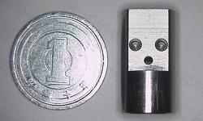
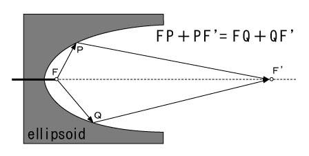
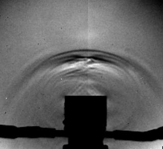

医療応用に向けた放電駆動小型衝撃波装置
背景
衝撃波医療は1980年代に結石破砕術として広まった。結石破砕術は体外で衝撃波を発生させ、体内の結石に集束させることで結石を破砕する。ところで、結石破砕が単純な力学的な破壊作用であるのに対し、衝撃波が生体軟組織に及ぼす影響は非常に複雑で、その多くは不明である。たとえば、近年、虚血部位に弱い衝撃波を照射することで血管が新生するという報告や、整形外科の分野における偽関節の衝撃波治療や関節疼痛の除去、再生医療における皮膚移植の際に衝撃波を照射することで生着が促進されるという報告がなされているが、それらの機序は未だ明らかにされていない。
このような背景から、軟組織、特に細胞レベルでの衝撃波の生体作用を解明し、衝撃波を医療に応用することが強く望まれている。しかしながら現在多く用いられている体外衝撃波装置は大型かつ高価であり、医学研究で行う細胞レベルでの衝撃波照射実験には不向きである。実際の治療においても、体外衝撃波装置を用いた場合、体外で発生した衝撃波は患部に到達するまでに音響インピーダンスの異なる多様な媒質を通過しなくてはならず、その経路で減衰や屈折・反射が起こる。そのため、今後必要とされる微小領域への精確な衝撃波照射は極めて困難である。
そこで、本研究では、放電駆動小型衝撃波装置の開発を軸に、衝撃波の医学的基礎研究を促進し、衝撃波医療の臨床応用を目指す。
放電駆動小型衝撃波装置
先に述べたように、新しい衝撃波医療の実現には、生体組織に対する衝撃波作用を解明する医学的基礎研究、目標としている効果を得られる臨床応用可能な衝撃波装置が不可欠となる。小型衝撃波装置は双方に多大な恩恵をもたらす。
本研究ではこれまでに、内視鏡下手術を想定し先端部外径が11mmの小型衝撃波装置を開発した（図１）。衝撃波の集束原理を図２に示す。装置先端部は回転楕円体形状をしており、第一焦点において球状衝撃波が発生すると、楕円の性質からそれぞれの楕円体面において衝撃波が反射し、各々の反射波が第二焦点で集束する。衝撃波は超音波同様波の伝播であり、そのため生体組織には損傷を与えないが、衝撃波を集束させることで対象部位に対して瞬間的な圧力・密度変化を及ぼすことができる。
衝撃波の駆動は放電にて行うが、これは他の方法と比較し低コストであり簡易に扱えるという利点がある。これにより、これまで限られた環境下でしかできなかった衝撃波研究をより広く行うことができるようになり、さらに将来的に臨床応用で用いられる際も多くの医療機関に導入されることが期待される。
我々はこれまでに本装置において、血管新生に必要とされている1MPaを超える衝撃波圧力を得ている。衝撃波圧力の計測だけでなく衝撃波の可視化も行っている。図３は高速度カメラを用いてシュリーレン法により衝撃波を撮影したものである。衝撃波が第二焦点にて集束していることが確認できる。
|  |
| 図１：小型衝撃波装置先端部 |
|  |
| 図２：衝撃波集束原理：楕円体の性質から図のような反射が三次元的に起こる |
|  |
| 図３：本装置で駆動した衝撃波の集束の様子 |
衝撃波医療の実現
小型衝撃波装置の開発と並行し、細胞に対する衝撃波作用について医学的見地から研究を行っている。衝撃波と生体組織の医学的知見を発掘し、これまでに発見されている有効な衝撃波作用の機序を解明するとともに、新しい衝撃波医療の可能性を追求したい。
また、小型衝撃波装置を鉗子に搭載し、従来の装置ではアクセス不可能な患部への衝撃波照射を可能とする衝撃波鉗子も目下開発中である。将来的には図４に示すようなハード・ソフト含めた衝撃波医療システムを構築することで、新しい衝撃波医療を確立したいと考えている。
Related Papers:
| 1 |
Keiichi
Nakagawa, Hongen Liao, Etsuko Kobayashi, Ichiro Sakuma 「Development of
small shock wave device for minimally invasive surgery」Computer
Assisted Radiology and Surgery 24th International Congress and
Exhibition, Geneva, Switzerland, June, 2010; Vol.5, Suppl.1,
pp.S315-S316 |
| 2 |
中川桂一, 金田道寛, 廖洪恩, 小林英津子, 佐久間一郎「放電による小型衝撃波装置開発のための基礎検討」日本コンピュータ外科学会誌, 第11巻第3号, pp.350-351, 2009 |
| 3 |
中川桂一「水中衝撃波装置の小型化に関する研究」ライフサポート, Volume21, pp.45 , 2009 |
|